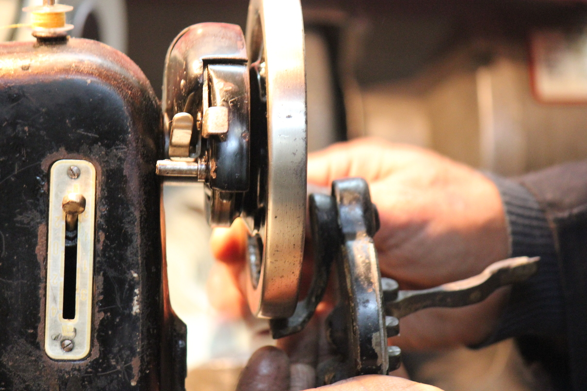

¿Qué es Como Nuevo?
Plataforma Web que ayudará a conectar oficios reparadores existentes en Santiago con potenciales clientes y así fomentar la restauración y reparación de objetos cotidianos.
Ésta contará con la información necesaria respecto a diferentes rubros como; textil, mecánica, cuero, carpintería, libros, entre otros.
El proyecto consistirá en destacar el trabajo de aquellos maestros a través de la difusión de material audiovisual e informativo y así contribuir a crear una segunda oportunidad tanto para los objetos como para los oficios que cada vez se sumergen en el olvido de un colectivo urbano inserto en una sociedad de consumo, donde "lo malo se bota".
Objetivo general
Promover, a través de códigos visuales, el acercamiento a oficios de reparación y el conocimiento técnicas tradicionales a nuevas generaciones.

Información

Generar un levantamiento de información de lugares que ofrecen servicios de reparaciones
Vínculos

Ayudar a generar vínculos entre aprendices y maestros para traspasar técnicas propias a las nuevas generaciones
Valoración

Darle valor al trabajo de estos maestros, que ayudan a proporcionar una nueva vida a un producto en desuso
Reutilización

Contribuir a la sociedad mediante la reutilización de objetos